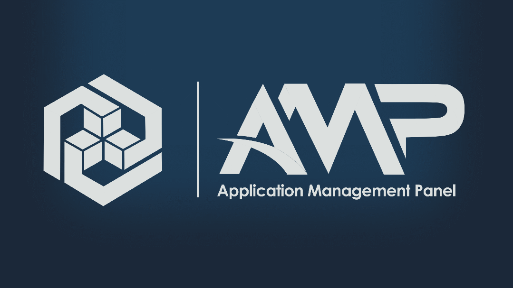
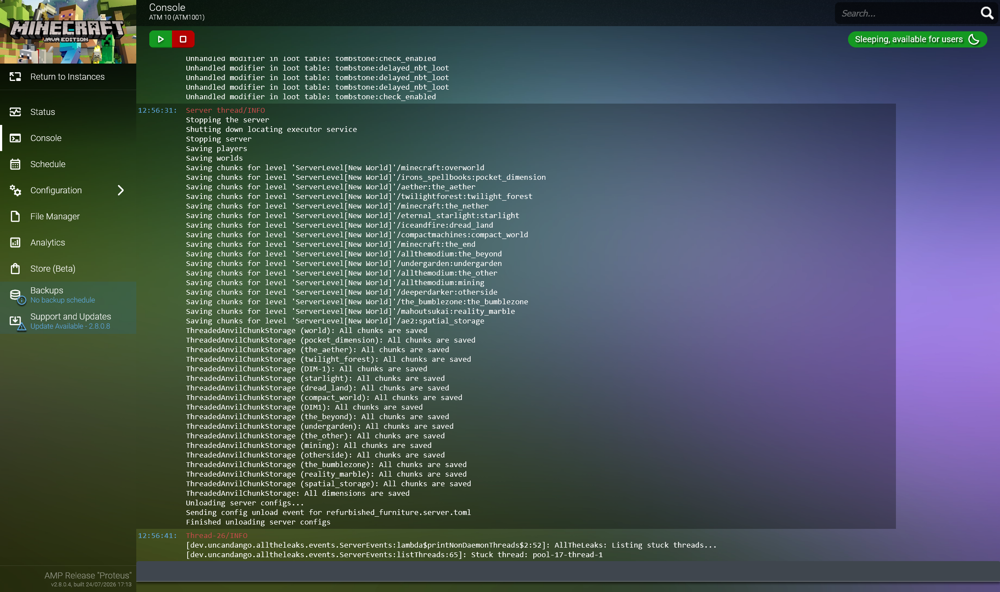
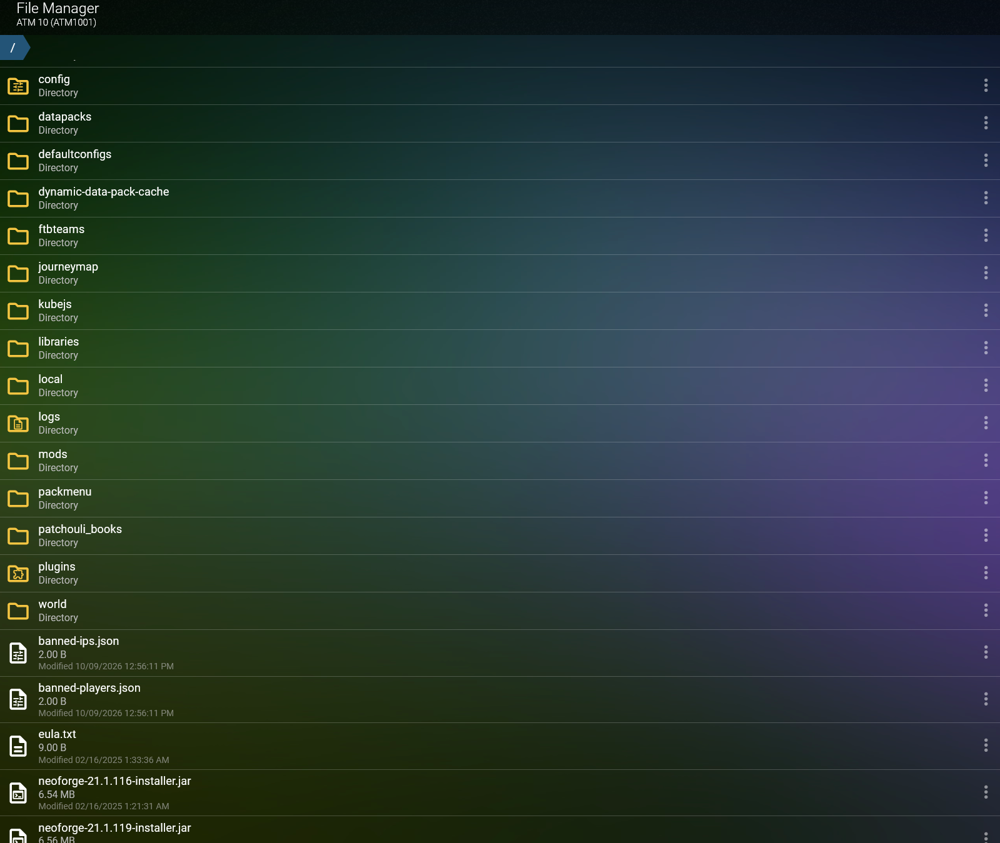

Why?
Before AMP, running a game server meant SSH-ing into a VM, finding the right server in a mess of mismanaged folders, and praying I remembered which config file belonged to which game. Updates were manual, backups didn't exist, and if a server crashed at 2 AM nobody was getting notified. I wanted one place where every server I run lives in its own little card with a console, a file manager, resource limits, and a schedule — something I could open in a browser and actually manage without memorising a dozen terminal commands. I also specifically did not want to stand up Docker and a separate database just to get a panel working, which is a lot of the friction that keeps people away from other panels.

AMP console view showing a modded Minecraft instance

File view in AMP showing the ability to browse and edit remote files as well as upload files
What does it do?
AMP (Application Management Panel) is a game server control panel made by CubeCoders. I have it running as an Ubuntu Server VM on my Proxmox server alongside everything else. When I want to spin up a new server — a Minecraft instance, an ARK server, anything on the huge supported list — I pick the application type, set a RAM ceiling and a CPU limit, and AMP handles the rest: it downloads the right binaries, generates a settings interface for that specific game, and gives me a live console and file manager in the browser. Each instance is isolated, so a misbehaving server eating memory does not starve the Minecraft instance sitting next to it.
The Minecraft support is where it really pays off. I can
install Forge and Fabric mods through the UI, browse and install
Spigot and Paper plugins, upload and switch worlds without
touching FTP, and edit server.properties through
form fields instead of opening a text file. Player management —
whitelist, ban, OP — is all in the panel too. For Steam-based
games like ARK or CS:GO, AMP drives SteamCMD under the hood
so I can schedule a one-click update or let it pull the latest
build on restart.
The built-in scheduler is what I use the most. I have nightly backups running on every instance, an auto-restart on the Minecraft server at 4 AM to clear memory. All of that is set through the UI — no crontab, no separate backup script. I can also manage user accounts with granular permissions, so I can give a friend access to one specific server without handing them the admin panel.
I reach AMP the same way I reach everything else: through a tunnel to my Oracle VPS (more info here). Anytime I want to set up another game server on a new port, all I need to do is open the security rules in my Oracle Cloud and allow that port, and my friends can just join through my domain instead of an unmemorable IP that also opens myself up when the server is closed.
What did I learn?
Setting AMP up taught me how instance-based management
actually works — how per-instance RAM and CPU limits are
enforced, why isolating each server matters when several of
them share one machine, and how a panel abstracts away
the process management that would otherwise be a wall of
systemctl and screen commands.
I also got comfortable with the scheduling side of things:
writing a task that runs a backup, another that restarts the
server on a schedule, and a third that reacts to an in-game
event like a player joining for the first time.
I learned how SteamCMD-driven updates work under the hood, how to read the instance update log when a Steam game fails to patch, and why a backup living on the same disk as the world it protects is not really a backup — so I set up a separate backup destination on my 12 terabyte drive. Managing mods and plugins through the UI instead of manually dropping JARs into a folder taught me how Forge, Fabric, and Paper resolve dependencies, and the REST API opened the door to automating instance creation if I ever want to script provisioning instead of clicking through the panel.
Video demonstrating installation and usage of AMP (time 8:09)